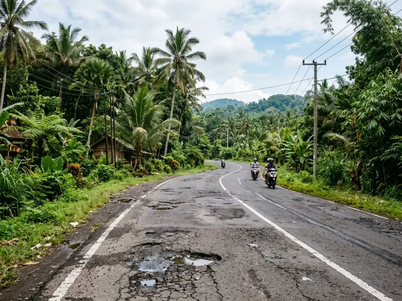
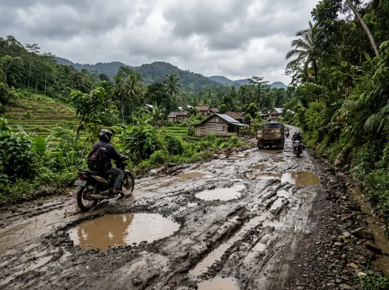

Peta Interaktif GIS
Pantau kondisi ruas jalan yang tersimpan di database secara visual dengan kode warna kondisi.
JalanKitta menyatukan partisipasi warga dan visualisasi spasial real-time dalam satu platform peta cerdas. Bersama mempercepat penanganan jalan rusak demi infrastruktur yang berdaya tahan tinggi.
–
Ruas dalam Database
–
Total Panjang (km)
–
Laporan Terverifikasi
Dilengkapi algoritma visual spasial cerdas untuk menyederhanakan pelaporan dan memastikan respon lebih cepat.
Pantau kondisi ruas jalan yang tersimpan di database secara visual dengan kode warna kondisi.
Unggah foto, tentukan lokasi dengan tombol “Lokasi Saya” atau klik peta, lalu kirim laporan untuk diverifikasi admin.
Garis ruas pada peta digambar mengikuti jalan sebenarnya menggunakan layanan routing OSRM, lengkap dengan filter kondisi.
Ringkasan jumlah ruas, panjang, dan laporan yang dapat diakses publik kapan saja.
Setiap laporan dikelompokkan secara visual untuk menentukan prioritas aksi pemeliharaan.
Permukaan aspal rata tanpa deformasi berarti, marka jalan jelas, dan aman dilewati kecepatan normal.

● Rusak RinganTerdapat retak rambut, lubang dangkal diameter <30 cm, atau gelombang permukaan yang memerlukan pelapisan ulang.

● Rusak BeratKerusakan struktural parah, kubangan dalam, atau bahu jalan longsor yang membahayakan keselamatan pengendara.
Siapa pun bisa menjadi pengawas infrastruktur jalan. Tidak perlu birokrasi berbelit, laporan langsung masuk ke radar pantau.
Gunakan GPS ponsel Anda secara otomatis atau geser pin lokasi langsung di peta interaktif.
Lampirkan foto kondisi aktual dan tandai tingkat kerusakan (Baik / Rusak Ringan / Rusak Berat).
Laporan masuk antrean verifikasi admin; status dapat dilihat di akun Anda setelah masuk.
Belum ada data laporan publik yang masuk.
Jadilah yang pertama melaporkan kondisi jalan di lingkungan Anda.
Rencana Kolaborasi Pemangku Kepentingan
Belum ada kemitraan resmi; daftar berikut hanya rencana pengembangan.
Berlangganan info mingguan mengenai ruas jalan yang telah selesai diperbaiki di kabupaten/kota Anda.